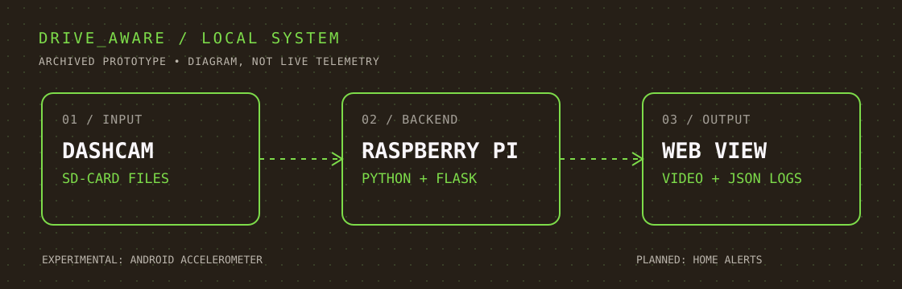

LOCAL VIDEO BROWSER
I used Python and Flask on the Raspberry Pi to list locally accessible .mp4 files and serve selected recordings through a simple HTML/Jinja interface.
GET /GET /video/<filename>FIELD NOTE 001 ✳ PERSONAL TECHNICAL PROJECT
An experiment in connecting everyday dashcam hardware with a Raspberry Pi, a Flask API, and a local interface for viewing recordings and motion data.
Built as a learning prototype, preserved as an implementation case study — not a deployed collision-detection product.

Dashcam recordings were useful, but the footage and event information were scattered across devices. I wanted one local place to inspect available clips and motion records without relying on a cloud product.
I used Python and Flask on the Raspberry Pi to list locally accessible .mp4 files and serve selected recordings through a simple HTML/Jinja interface.
GET /GET /video/<filename>A JSON endpoint accepts X/Y/Z motion readings and writes them to a local file. I tested API requests separately from the mobile app to confirm the Flask side was receiving data.
POST /motionGET /motion-logI wrote a file-watching script to detect newly visible recordings, copy them, and attempt a webhook. Its paths do not yet connect to the Flask browser, and automatic ingestion was not verified.
The Wolfbox camera's wireless functionality didn't expose a straightforward file-access interface. I shifted toward recordings available through SD-card / mounted-file access rather than claiming direct wireless ingestion.
curl requests and local logs demonstrated the Flask endpoint. The Cordova accelerometer app still had HTTP/security configuration problems communicating reliably with the Pi. I kept those findings separate.
The recovered watcher copies files into a different location from the one the Flask app scans. This is an integration gap to fix before calling automatic event retrieval complete.
This page describes a historical prototype. Its original Raspberry Pi environment was not reproduced or retested for the portfolio, and there is no live demonstration or emergency-alert service.
Connect the watcher output to the Flask video directory and handle incomplete writes or duplicates.
Relate recording filenames and timestamps to a durable event record that can be browsed locally.
Revisit secure mobile telemetry and home notifications only after the basic event pipeline is reliable.
/ IMPLEMENTATION TAKEAWAY
The part I would bring to a development or implementation role is the approach: define the moving pieces, test their boundaries independently, troubleshoot the actual failure, and document what the evidence supports.